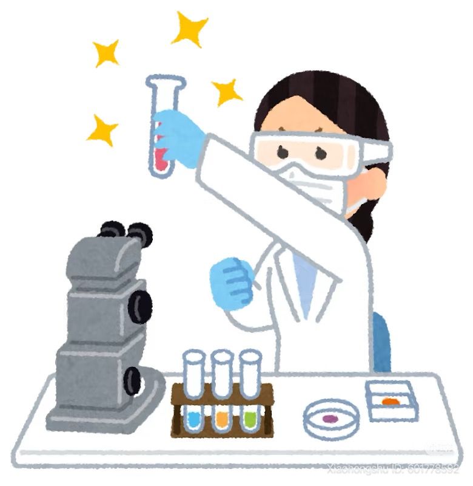

Welcome to Sasa's Planet
用鼠标靠近小喇叭，它会跟你说话喔！
Origin of Sasa's Planet
因为混乱的思想在这个宇宙不断碰撞，
产生了很多不同的行星。
每个行星都有他们的居民、习俗和故事，
就像勺子舀起的每一个汤圆都有内馅。
他们都专注在自己的生活里，
彼此之间有联系，但互不干扰。
白天和黑夜总是在不断地交替，
在交替的过程中很容易产生裂缝。
在无人注意到的角落越扩越大，
慢慢形成了一个星球。
这个和现实世界接壤
但又独自旋转的星球叫做
小撒星球（Sasa's Planet）！
学术研究
进行中

1.时间多普勒效应的任务分离：空间运动对前瞻记忆的影响——数据分析、学术汇报&论文撰写阶段）
2.算法滤镜：公众对算法的态度感知——数据收集、大数据爬取分析词云阶段
思考中
1.诚如其言？人类对Deepfake的感知层次——逻辑思路整理，引言撰写
2.标签不可信：AI视频下的标签有效性对视频内容真实性的影响
3.识别伪人：看到Deepfake脸时我的异样感从何而来？一项fMRI or fNIRs的研究
做梦中
困在现在的人
记忆行者